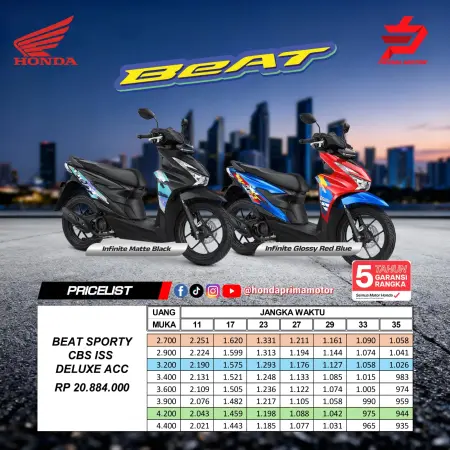

Promo Kredit Honda BeAT Petukangan: Lincah, Irit, & Cicilan Paling Merakyat!

Macet parah di kolong Tol JORR Petukangan hingga simpang Ciledug Raya sudah jadi sarapan sehari-hari. Kalau Anda masih pakai motor berat yang boros bensin, bisa dipastikan dompet dan tenaga Anda akan cepat terkuras habis.
Kondisi jalanan yang rapat ini menuntut kendaraan tempur yang ramping dan super gesit. Jawabannya hanya satu: Honda BeAT. Ini adalah primadona sejuta umat, dan pengajuan kredit Honda BeAT di area Petukangan dan Pesanggrahan selalu jadi yang tertinggi di diler kami.
Solusi Tepat Mahasiswa Budi Luhur & Pekerja Kantoran
Dengan *body* yang dirancang aerodinamis dan sangat ringan, Honda BeAT mampu menyelip di kemacetan paling ekstrem sekalipun. Mesin generasi terbarunya sudah terbukti tangguh dan sangat irit bahan bakar, membebaskan Anda dari kewajiban antre panjang di SPBU.
Khusus bagi mahasiswa di sekitar kampus Budi Luhur atau pekerja dengan penghasilan UMR, Honda BeAT adalah investasi transportasi terbaik yang tidak akan mencekik pengeluaran bulanan Anda.
Rincian Promo DP Murah Honda BeAT Khusus Area Petukangan
Kami sangat mengerti kebutuhan warga Petukangan Utara maupun Selatan. Oleh karena itu, Prima Motor memberikan promo DP super murah khusus pengajuan online minggu ini. Hanya dengan setoran awal di bawah 1 jutaan, motor impian ini sudah bisa Anda bawa pulang.
Pilih tipe CBS atau tipe Deluxe yang dilengkapi Smart Key System sesuai selera Anda. Keduanya berhak mendapatkan diskon potongan tenor cicilan yang akan membuat total pembayaran Anda jauh lebih hemat.
Stok BeAT di diler Ciledug sangat terbatas karena permintaan tinggi. Kunci harga promo dan potongan tenor Anda hari ini via WhatsApp!
KLAIM PROMO BEAT VIA WAPengajuan KTP Daerah? Serahkan Pada Tim Kami!
Banyak perantau di Petukangan yang ragu mengajukan kredit karena KTP kampung. Hapus keraguan itu! Selama Anda nge-kost, ngontrak, atau berdomisili di Jakarta Selatan dan sekitarnya, kami siap fight mengurus data Anda sampai ACC leasing.
Cukup fotokan KTP asli dan dokumen pendukung lainnya melalui WA. Proses survei sangat fleksibel, dan motor akan langsung diantar menggunakan *pick-up* diler kami. Pembayaran DP murni dilakukan di tempat (COD) saat motor sudah parkir di teras kost atau rumah Anda.